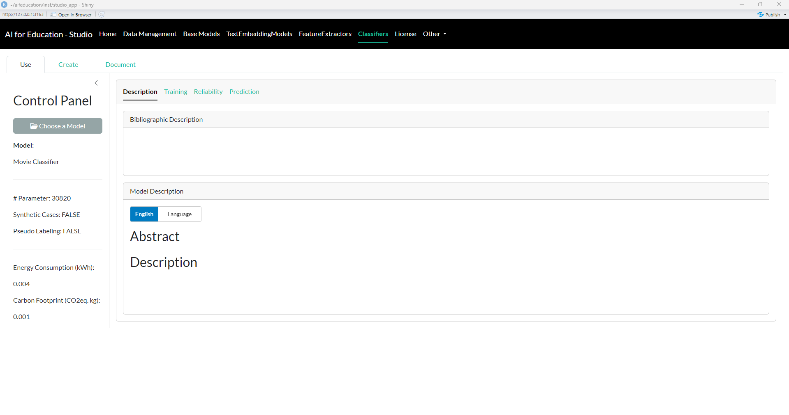
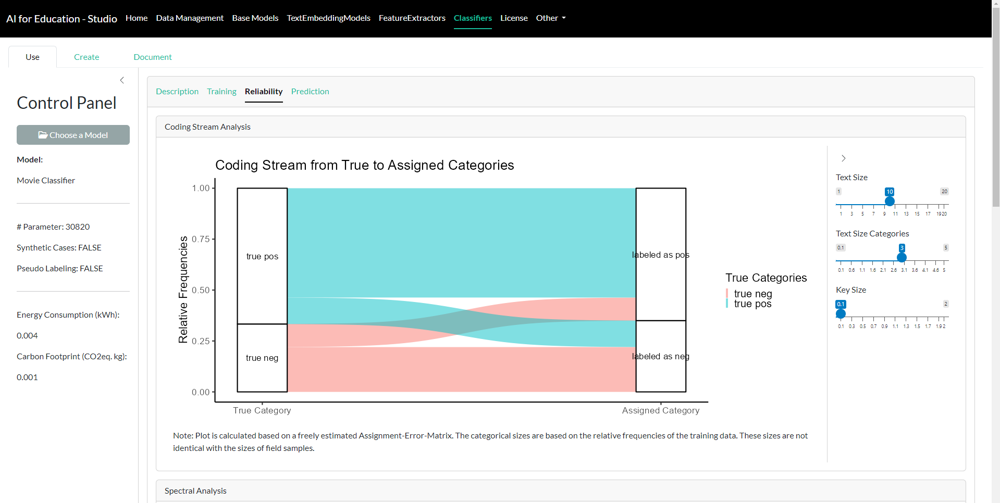

02 Using the graphical user interface Aifeducation - Studio
Florian Berding, Julia Pargmann, Andreas Slopinski, Elisabeth Riebenbauer, Karin Rebmann
Source:vignettes/gui_aife_studio.Rmd
gui_aife_studio.Rmd1 Introduction and Overview
1.1 Preface
This vignette introduces Aifeducation - Studio which is a graphical user interface for creating, training, documenting, analyzing, and applying artificial intelligence (AI). It is made for users unfamiliar with R or those who do not have coding skills in relevant languages (e.g., python). For more experienced users, the interface provides a convenient way for working with AI in an educational context.
This article overlaps with vignette 03 Using R syntax, which explains how to use the package with R syntax. We assume that aifeducation is installed as described in vignette 01 Get Started. The introduction starts with a brief explanation of the basic concepts, which are necessary to work with this package.
1.2 Basic Concepts
In the educational and social sciences, assigning scientific concepts to observations is an important task that allows researchers to understand an observation, to generate new insights, and to derive recommendations for research and practice.
In educational science, several areas deal with this kind of task. For example, diagnosing students’ characteristics is an important aspect of a teachers’ profession and necessary to understand and promote learning. Another example is the use of learning analytics, where data about students is used to provide learning environments adapted to their individual needs. On another level, educational institutions such as schools and universities can use this information for data-driven performance decisions (Laurusson & White 2014) as well as where and how to improve it. In any case, a real-world observation is aligned with scientific models to use scientific knowledge as a technology for improved learning and instruction.
Supervised machine learning is one concept that allows a link between real-world observations and existing scientific models and theories (Berding et al. 2022). For the educational sciences, this is a great advantage because it allows researchers to use the existing knowledge and insights to apply AI. The drawback of this approach is that the training of AI requires both information about the real world observations and information on the corresponding alignment with scientific models and theories.
A valuable source of data in educational science are written texts, since textual data can be found almost everywhere in the realm of learning and teaching (Berding et al. 2022). For example, teachers often require students to solve a task which they provide in a written form. Students have to create a solution for the tasks which they often document with a short written essay or a presentation. This data can be used to analyze learning and teaching. Teachers’ written tasks for their students may provide insights into the quality of instruction while students’ solutions may provide insights into their learning outcomes and prerequisites.
AI can be a helpful assistant in analyzing textual data since the analysis of textual data is a challenging and time-consuming task for humans.
Please note that an introduction to content analysis, natural language processing or machine learning is beyond the scope of this vignette. If you would like to learn more, please refer to the cited literature.
Before we start, it is necessary to introduce a definition of our understanding of some basic concepts, since applying AI to educational contexts means to combine the knowledge of different scientific disciplines using different, sometimes overlapping concepts. Even within a single research area, concepts are not unified. Figure 1 illustrates this package’s understanding.

Since aifeducation looks at the application of AI for classification tasks from the perspective of the empirical method of content analysis, there is some overlapping between the concepts of content analysis and machine learning. In content analysis, a phenomenon like performance or colors can be described as a scale/dimension which is made up by several categories (e.g. Schreier 2012, pp. 59). In our example, an exam’s performance (scale/dimension) could be “good”, “average” or “poor”. In terms of colors (scale/dimension) categories could be “blue”, “green”, etc. Machine learning literature uses other words to describe this kind of data. In machine learning, “scale” and “dimension” correspond to the term “label” while “categories” refer to the term “classes” (Chollet, Kalinowski & Allaire 2022, p. 114).
With these clarifications, classification means that a text is assigned to the correct category of a scale or, respectively, that the text is labeled with the correct class. As Figure 2 illustrates, two kinds of data are necessary to train an AI to classify text in line with supervised machine learning principles.

By providing AI with both the textual data as input data and the corresponding information about the class as target data, AI can learn which texts imply a specific class or category. In the above exam example, AI can learn which texts imply a “good”, an “average” or a “poor” judgment. After training, AI can be applied to new texts and predict the most likely class of every new text. The generated class can be used for further statistical analysis or to derive recommendations about learning and teaching.
In use cases as described in this vignette, AI has to “understand” natural language: „Natural language processing is an area of research in computer science and artificial intelligence (AI) concerned with processing natural languages such as English and Mandarin. This processing generally involves translating natural language into data (numbers) that a computer can use to learn about the world. (…)” (Lane , Howard & Hapke 2019, p. 4)
Thus, the first step is to transform raw texts into a a form that is usable for a computer, hence raw texts must be transformed into numbers. In modern approaches, this is usually done through word embeddings. Campesato (2021, p. 102) describes them as “the collective name for a set of language modeling and feature learning techniques (…) where words or phrases from the vocabulary are mapped to vectors of real numbers.” The definition of a word vector is similar: „Word vectors represent the semantic meaning of words as vectors in the context of the training corpus.” (Lane, Howard & Hapke 2019, p. 191). In the next step, the words or text embeddings can be used as input data and the labels as target data for training AI to classify a text.
In aifeducation, these steps are covered with three different types of models, as shown in Figure 3.

Base Models: The base models are the models which contain the capacities to understand natural language. In general, these are transformers such as BERT, RoBERTa, etc. A huge number of pre-trained models can be found on Huggingface.
Text Embedding Models: The modes are built on top of base models and store directions on how to use these base models for converting raw texts into sequences of numbers. Please note that the same base model can be used to create different text embedding models.
Classifiers: Classifiers are used on top of a text embedding model. They are used to classify a text into categories/classes based on the numeric representation provided by the corresponding text embedding model. Please note that a text embedding model can be used to create different classifiers (e.g. one classifier for colors, one classifier to estimate the quality of a text, etc.).
With the help of this overview we can start the introduction of Aifeducation Studio.
2 Starting Aifeducation Studio
We recommend to start with a clean R session. Then you can start Aifeducation Studio by entering the following into the console:
aifeducation::start_aifeducation_studio()Please note that this can take a moment.
At the beginning you will see the home page (Figure 4).

3 Using Aifeducation Studio
3.1 Preparing Data
3.1.1 Collection of Raw Texts
3.1.1.1 Creating a Dataset
The fist step in working with AI is to gather and to structure data. In the scope of aifeducation, data can be either a collection of raw texts, sequences of numbers representing the texts (text embeddings) or texts’ labels.
Collections of raw texts are necessary in two cases: First, to train or to fine-tune base models. Second, to transform texts into numerical representations (texts embeddings) which can be used as input for training a classifier or for predicting texts’ labels via classifiers.
To create a collection of raw texts, you have to choose the Data Management page on the top panel as shown in Figure 5.
On the resulting page (see Figure 6), you first have to choose the directory where the texts are stored (box Text Sources). We recommend that you store all texts you would like to use in a single folder. Within this folder, you can structure your data with sub-folders.
In the next step, you can decide which file formats should be included (box File Types). Currently, aifeducation supports .txt, .pdf, and .xlsx files. If enabled, all files of the requested file format are included in your data collection.
.txt files
The first alternative is to store raw texts in .txt files. To use these you have to structure your data in a specific way:
- Create a main folder for storing your data.
- Store every raw text/document into a single .txt file into its own folder within the main folder. In every folder there should be only one file for a raw text/document.
- Add an additional .txt file to the folder named
bib_entry.txt. This file contains bibliographic information for the raw text. - Add an additional .txt file to the folder named
license.txtwhich contains a short statement for the license of the text such as “CC BY”. - Add an additional .txt file to the folder named
url_license.txtwhich contains the URL/link to the license’ text such as “https://creativecommons.org/licenses/by/4.0/”. - Add an additional .txt file to the folder named
text_license.txtwhich contains the full license in raw texts. - Add an additional .txt file to the folder named
url_source.txtwhich contains the URL/link to the text file in the internet.
Applying these rules may result in a data structure as follows:
- Folder “main folder”
- Folder Text A
- text_a.txt
- bib_entry.txt
- license.txt
- url_license.txt
- text_license.txt
- url_source.txt
- Folder Text B
- text_b.txt
- bib_entry.txt
- license.txt
- url_license.txt
- text_license.txt
- url_source.txt
- Folder Text C
- text_c.txt
- bib_entry.txt
- license.txt
- url_license.txt
- text_license.txt
- url_source.txt
- Folder Text A
Please note, that adding a bib_entry.txt,
license.txt, url_license.txt,
text_license.txt, and url_source.text to every
folder is optional. If there is no such a file in the corresponding
folder, there will be an empty entry in the data set. However, against
the backdrop of the European AI Act, we recommend to provide license and
bibliographic information to make the documentation of your models more
straightforward. Furthermore, some licenses, such as those provided by
Creative Commons, require statements about the creators, a copyright
notice, a URL or link to the source material (if possible), the license
of the material and a URL or link to the license’s text on the internet
or the license text itself. Please check the license requirements of the
material you are using, too.
.pdf files
The second alternative is to use .pdf files as a source for raw texts. Here the necessary structure is similar to .txt files.
Please note that all files except the text file must be .txt, not .pdf.
As stated above bib_entry.txt, license.txt,
url_license.txt, text_license.txt, and
url_source.text are optional.
.xlsx files
The third alternative is to store the raw texts as .xlsx files. This alternative is practicable if you have many small raw texts. For raw texts that are very large, such as books or papers, we recommend to store them as .txt or .pdf files.
In order to add raw texts from .xlsx files, the files need a special structure:
- Create a main folder for storing all .xlsx files you would like to read.
- All .xlsx files must contain the names of the columns in the first row (Figure 7) and the names must be identical for each column across all .xslx files you would like to read.
- Every .xslx files must contain a column storing the text ID and must contain a column storing the raw text. Every text must have a unique ID across all .xlsx files.
- Every .xslx file can contain an additional column for the bib entry.
- Every .xslx file can contain an additional column for the license.
- Every .xslx file can contain an additional column for the license’s URL.
- Every .xslx file can contain an additional column for the license’s text.
- Every .xslx file can contain an additional column for the source’s URL.
Your .xlsx file may look like

The last step is to choose a folder where your collection of raw texts should be saved. Please select a path and a folder name for your LargeDataSet (Create Data Set button on the Control Panel) (Figure 8). In the Directory field you specify the location where to save the object and with Folder Name you define the name of the folder that will be created within that directory. In this folder the data set is saved.
Finally, you can start creating the collection (Continue button in Figure 8). Please note that this can take some time. You can see the creation progress in the progress bars (Figure 9).
When the process finishes you can see a message like in Figure 10 (if the process has completed without any errors).

You now have a folder with the files that can be used for further
tasks like creation and training/tuning the transformers (Base
Models tab on the top panel), etc. The object contains a
dataset that stores the texts together with their IDs.
In case of .xlsx files, the texts’ IDs are set to the IDs stored in the corresponding column for ID. In case of .pdf and .txt files, the file names are used as ID (without the file extension).
Please note that a consequence of this is that two files text_01.txt and text_01.pdf have the same ID (see Figure 11), which is not allowed. Please ensure that you use unique IDs across file formats.

The IDs are very important since they are used to match the corresponding class/category, if available.
3.1.1.2 Exploring a Dataset
To explore a large dataset for raw texts which is saved on the disk you can use the DataSetExplorer. The DataSetExplorer can be found on the tab Data Management.
On the rights side (Control Panel) you can choose a folder where the dataset is stored. After loading you can explore the texts by using the widgets within the Control Panel. Please note that the explorer is only used for displaying the raw texts and not for changing the data.
The widget Documents allows you to select a document. With help of the widget Pages you can browse between the different pages of a document.
3.1.2 Collections of Texts’ Labels
Labels are necessary if you would like to train a classifier. The easiest way is to create a table that contains a column for the texts’ ID and one or multiple columns that contain the texts’ categories/classes. Supported file formats are .xlsx, .csv, and .rda/.rdata. Figure 13 illustrates an example for a .xslx file.

In any case, the table must contain a column with the name “id” which contains the texts’ IDs. All other columns must also have unique names. Please pay attention to use “id” and not “ID” or “Id”.
If you would like to create a dataset for labels without using Excel you can use the TableEditor. The TableEditor is located in the tab Data Management.

On the right side you can either create a new empty table or load and
edit an existing table. The TableEditor can be used with .csv
files and with .rda or .rdata files that contain a matrix
or data.frame.
- Change values: You can add or change a value within a cell by clicking on the specific cell.
- Add rows: You can add a row by clicking in the button Add Row.
- Remove rows: Rows can be removed by entering the number of the rows that you would like to remove. After entering the number clicking on Remove Row will delete that row.
- Add column: To add a new column just click on the button Add Column.
- Remove column: To remove a column please enter the name of the column you would like to remove. Than click on Remove Column.
- Rename column: To rename a column please enter the name of the column on the right side of the tab. The next step is to enter the new name and to click on Rename Column.
To save the table to disk you can click on Save As.
3.2 Base Models
3.2.1 Overview
Base models are the foundation of all further models in aifeducation. At the moment, these are transformer models such as BERT (Devlin et al. 2019), RoBERTa (Liu et al. 2019), modernBERT (Warner et al. 2024), Funnel-Transformer (Dai et al. 2020), Longformer (Beltagy, Peters & Cohan 2020), and MPNet (Song et al. 2020). As a general first step, these models are trained on a large corpus of general texts. In the next step, the models are fine-tuned to domain-specific texts and/or fine-tuned for specific tasks. Since the creation of base models requires a huge number of texts resulting in high computational time, it is recommended to use pre-trained models. These can be found on Huggingface. Sometimes, however, it is more straightforward to create a new model to fit a specific purpose. Aifeducation Studio supports the opportunity to both create and train/fine-tune base models.
3.2.2 Creation of Base Models
In order to create a new base model you have to choose the option (tab) Create on the tab Base Models on the top panel of the app. Figure 15 shows the corresponding page.
 Figure 15: Base
Models - Create Transformer (click image to enlarge)
Figure 15: Base
Models - Create Transformer (click image to enlarge)
Every transformer model is composed of two parts: 1) the tokenizer which splits raw texts into smaller pieces to model a large number of words with a limited, small number of tokens and 2) the neural network that is used to model the capabilities for understanding natural language.
At the beginning you can choose between the different supported transformer architectures (Base Model Type combobox in Control Panel).
Depending on the architecture, you have different options determining the shape of your neural network.
You find a box named Input Data at the top. Here you must provide the path to a folder which contains a LargeDataSetForTexts. This data set is used to calculate the vocabulary of the transformer. This file should be created with Aifeducation Studio (tab Data Management) to ensure compatibility. See section 3.1.1 for more details.
In addition you find a box Vocabulary. Here you can configure the vocabulary that the transformer should use. It is very important that you provide a number of how many tokens the vocabulary should include. Depending on the transformer method, you can set additional options, affecting a transformer’s vocabulary.
Transform to Lower: If this option is enabled, all words in a raw text are transformed to lower cases. For instance, the resulting token of Learners and learners are the same. If disabled, Learners and learners will have a different tokenization.
Add Prefix Spaces: If enabled, a space is added to the first word if there is not already one. Thus, enabling this option leads to a similar tokenization for the word learners in both cases: 1) “learners need a high motivation for high achievement.” and 2) “A high motivation is necessary for learners to achieve high performance.”.
Trim Offsets: If this option is enabled, the white spaces of the produced offsets are trimmed.
Finally, you can start the creation of your model by clicking on the button “Create Model”. Here you have to select a directory and folder to save the resulting model. The creation of the model may take some time. You can see the progress of creation with progress bars.
3.2.3 Train/Tune a Base Model
If you would like to train a new base model (see section 3.2.2) for the first time or want to adapt a pre-trained model to a domain-specific language or task, you have to click on the Train section on the Base Models tab.
 Figure 16:
Base Models - Train/Tune Transformer (click image to enlarge)
Figure 16:
Base Models - Train/Tune Transformer (click image to enlarge)
In the first step, you have to choose the base model you would like to train/tune (box Base Model). Please note that every base model consists of several files. Thus, you cannot provide neither single nor multiple files. Instead you have to provide the folder that stores the entire model.
Compatible models are all base models that you have created with Aifeducation Studio. In addition you can use any model from Huggingface that uses an architecture implemented in aifeducation such as BERT, modernBERT, etc.
Second, you have to provide a LargeDataSetForTexts representing the raw texts which should be used for training/tuning (box Input Data). We recommend that you create this collection of texts as described in section 3.1.1.
After choosing a base model, new boxes appear as shown in Figure
17.
Possible options depend on the kind of model.
Size of Every Chunk: For training and validating a base model, the raw texts are split into several smaller texts. This value determines the maximum length of these smaller text pieces in number of tokens. This value cannot exceed the maximum size set during creation of the base model.
Minimal Sequence Length: This value determines the minimal length of a text chunk in order to be part of the training and validation data.
Full Sequences Only: If this option is enabled, only text chunks with a number of tokens equal to “chunk size” are included in the data. Disable this option if you have a lot of small text chunks you would like to use for training and validation.
Probability of Token Masking: This option determines how many tokens of every sequence should be masked.
Probability of Token Permutation: This option determines how many tokens of every sequence are used for permutation.
Whole Word Masking: If this option is activated, all tokens belonging to a single word are masked. If this options is disabled or not available token masking is used.
Size of Validation Data Set: This option determines how many sequences should be used for validating the performance of the base model. Sequences used for validation are not available for training.
Batch Size: This option determines how many sequences should be processed at the same time. Please adjust this value to the computation capacities of your machine.
Epochs: The maximum number of epochs for training. During training, the model that has the best validation loss is saved on disk an will be used for the final model.
Learning Rate: The initial learning rate.
You can start training the model by clicking on the button Start Training. In this step, you have to provide the directory where your trained model should be saved after training. It is very important that this directory is not the same directory as the one you stored the original model in.
Please note that the training of a base model can last days or even weeks, depending on the size and the kind of model, the amount of data, and the capacities of your machine. You can see the training progress with the progress bars and plot (Figure 17).

3.3 Text Embedding Models
3.3.1 Create a Text Embedding Model
The text embedding model is the interface to R in aifeducation. In order to create a new model, you need a base model that provides the ability to understand natural language. This object contains all relevant information for transforming raw texts into a numeric representation that can be used for machine learning.
In aifedcuation, the transformation of raw texts into numbers is a separate step from downstream tasks such as classification. This is to reduce computational time on machines with low performance. By separating text embedding from other tasks, the text embedding has to be calculated only once and can be used for different tasks at the same time. Another advantage is that the training of the downstream tasks involves only the downstream tasks and not the parameters of the embedding model, making training less time-consuming, thus decreasing computational intensity. Finally, this approach allows the analysis of long documents by applying the same algorithm to different parts.
You can open the creation page by clicking on the “Create” tab in the section “Text Embedding Models”. Figure 18 shows the corresponding page.
 Figure 18: Text
Embedding Model - Create (click image to enlarge)
Figure 18: Text
Embedding Model - Create (click image to enlarge)
First you have to choose the base model that should form the foundation of your new text embedding model. Please select the folder that contains the entire model and not single files (button Choose a Base Model on the Control Panel).
After choosing a model, new boxes appear which allow you to customize your interface. Here it is very important that you give your model a unique name and label (Control Panel). The difference between Name and Label is that Name is used for the computer and Label for users. Thus, Name should not contain any spaces or special characters. Label does not have any restrictions. Think of Label as the title of a book or paper. With Label you can also provide a version number if you create a newer version of your model. In case you create a new model, we recommend to use “0.0.1”. It is also important that you choose which language your model is created for, such as English, French, German, etc.
On the right side of the box Interface Setting you can set how the interface should process raw text:
N chunks: Sometimes texts are very long. With this value, you can decide into how many chunks longer texts should be divided. The maximum length of every chunk is determined by the value provided at “Maximum Sequence Length”. Minimum if chunks is two.
Maximal Sequence Length: This value determines the maximum number of tokens your model processes for every chunk.
N Token Overlap: This value determines how many tokens form the prior chunk should be included in the current chunk. An overlap can be useful to provide the correct context for every chunk.
Layers for Embeddings - Min: Base models transform raw data into a sequence of numbers by using the different layers’ hidden states. With this option you can decide which layer to use first.
Layers for Embeddings - Max: With this option you can decide which is the last layer to use. The hidden states of all layers between min and max are averaged to form the embedding of a text chunk.
Pooling Type: With this option you can decide if only the hidden states of the cls-token should be used for the embedding. If you set this option to “Average”, the hidden states of all tokens are averaged within each layer except the hidden states for padding tokens.
The maximum number of tokens your model can process and provide for downstream tasks can be calculated as If the text is longer, the remaining tokens are ignored and lost for further analysis.
Please note that you can create multiple text embedding models with a different configuration based on the same base model.
The last step is to provide and name a folder to save the model to (button Save Model).
3.3.2 Using a Text Embedding Model
Using a text embedding model is a central aspect of applying artificial intelligence in aifeducation. The corresponding page can be found by clicking on “Use” in the tab “Text Embedding Models”. At the start you have to choose the model that you would like to use. Please select the folder that contains the entire model instead of selecting single files (button Choose a Model). After selecting and loading a model, a new box appears that shows you the different aspects of the model and how you can use it.
The tab Description (Figure 19) provides you with the documentation of the model.
 Figure 19:
Text Embedding Model - Description (click image to enlarge)
Figure 19:
Text Embedding Model - Description (click image to enlarge)
The tab Training shows the development of the loss and the validation loss during the last training of the corresponding base model. If no plot is displayed, no history data is available.
The tab Embed Text (Figure 20) allows you to transform raw texts into a numerical representation of these texts, called text embeddings. These text embeddings can be used in downstream tasks such as classifying texts. In order to transform raw texts into embedded texts, you first have to select a collection of raw texts (a folder containing several files). We recommend that you create this collection according to section 3.1.1. Next you have to provide the folder where the embeddings should be stored and name it. With Batch Size you can determine how many raw texts should be processed simultaneously. Please adjust this value to your machine’s capacities. By clicking on the button “Save Embeddings” the transformation of texts begins.
Figure 20: Text Embedding Model - Embeddings (click image to enlarge)
{kind=link}
The tab Tokenize/Encode/Decode (Figure 21) offers you insights into the way your text embedding model processes data. In the box Encode you can insert a raw text and after clicking on Encode, you can see how the text is divided into tokens and their corresponding IDs. The IDs are passed to the base model and are used to generate the numeric representation of a text. The box Decode allows you to reverse this process. There you can insert a sequence of numbers (separated with a comma or with spaces) and after clicking on Decode, the corresponding tokens and the raw text appear.
 Figure 21: Text Embedding Model - Tokenize/Encode/Decode (click image to
enlarge)
Figure 21: Text Embedding Model - Tokenize/Encode/Decode (click image to
enlarge)
Finally, the tab Fill Mask (Figure 22) allows you to request the underlying base model of your text embedding model to calculate a solution to a fill-in-the-blank text. In the box Text you can insert a raw text. A gap is signaled when you insert the corresponding masking token. This token can be found in the table above in the row for “mask_token”. If you insert a gap/mask_token please ensure correct spelling. With N Solutions per mask you can determine how many tokens the model should calculate for every gap/mask_token. After clicking “Calculate Tokens”, you will find an image on the right side of the box, showing you the most reasonable token for the selected gap. The tokens are ordered by certainty; from the perspective of the model, the most reasonable tokens are at the top and the less reasonable tokens are at the bottom.
 Figure 22: Text
Embedding Model - Fill Mask (click image to enlarge)
Figure 22: Text
Embedding Model - Fill Mask (click image to enlarge)
3.3.3 Documenting a Text Embedding Model
Creating “good” AI models requires a lot of effort. Thus, sharing work with other users is very important to support progress in a discipline. Thus, meaningful documentation is required. In addition, a well written documentation makes an AI model more transparent, allowing others to understand how the AI model generated a solution. This is also very important in order to judge the limitations of a model.
To support developers in documenting their work, Aifeducation Studio provides an easy way to add a comprehensive description. You find this part of the app by clicking on “Document” in the tab Text Embedding Models. First, you have to choose the text embedding model you would like to document (not the base model!).
After choosing a model, a new box appears, allowing you to insert the necessary information. Via the tabs Developers and Modifiers, you can provide the names and email addresses of all relevant contributors. Developers refer to the people who created a model, while Modifiers refers to the people who adapted a pre-trained model to another domain or task.
 Figure 23:
Text Embedding Model - Documentation (click image to enlarge)
Figure 23:
Text Embedding Model - Documentation (click image to enlarge)
In the tabs Abstract and Description, you can provide an abstract and a detailed description of your work in English and/or in the native language of your text embedding model (e.g., French, German, etc.), allowing you to reach a broader audience (Figure 24). In all four tabs you can provide your documentation in plain text, html, and/or markdown allowing you to insert tables or to highlight parts of your documentation. If you would like to see what your documentation will look like on the internet, you can click on the button “Preview”. Saving your changes is possible by clicking on Save.
For more information on how to document your model, please refer to the vignette 03 Sharing and Using Trained AI/Models.
3.4 Classifiers
3.4.1 Create a Classifier
Classifiers are built on top of a text embedding model. To create a classifier, click on Create in the tab Classifiers. Figure 24 shows the corresponding page.
 Figure 24:
Classifier - Creation Part 1 (click image to enlarge)
Figure 24:
Classifier - Creation Part 1 (click image to enlarge)
First, you choose a core model within the Control Panel on the left side. It determines where different layers are located and how the outputs of the different layers are combined into the final output of the model.
The sequential architecture (see Figure 25) provides models where the input is passed to a specific number of layers step by step. All layers are grouped by the kind of layer into stacks.

In contrast, the parallel architecture (see 26) offers a model where an input is passed to different types of layers separately. At the end the outputs are combined to create the final output of the whole model.

You can find the name of the used core model in the name of the
classifier. For example TEClassifierSequential uses a
sequential core model while TEClassifierParallel
uses a parallel core model.
In general, all layers within a core model allow further customization allowing you to build a high number of different models (see box Model Configuration in Figure 25).
Second, you can choose how the core model is used for classification. At the moment a probability and metric based classifier is possible.
- Probability Classifiers: Probability classifiers are used to predict a probability distribution for different classes/categories. This is the standard case most common in literature.
- Prototype Based Classifiers: Prototype based classifiers are a kind of metric based classifiers. Here the classifiers do not predict a probability distribution. Instead it calculates a prototype for every class/category and measures the distance between a case and all prototypes. The class/category of the prototype with the smallest distance to the case is assigned to that case. In contrast to the probability classifiers these models can handle classes/categories that were not part of the training.
Please note that creating, training, and predicting works for all types of classifiers as described in the sections below.
Creating a classifier requires two kinds of data. First, a text embedding of a collection of texts. These embeddings should be created with a text embedding model as described in section 3.3.2. Second, a table with the labels of every text. This kind of data should be created as described in section 3.1.2.
You can provide the text embeddings by opening the corresponding file in the first box (Input Data) by clicking on the Choose Embeddings button. After selecting the embeddings, you will see a summary of the underlying text embedding model that generated the embeddings. In addition, you can see how many documents are in the file.
Please note that the classifier is bound to the text embedding model that generated the embeddings. That is, the classifier can only be used if you have access to the corresponding text embedding model. The text embedding model is necessary to transform raw texts into a format that the classifier can understand.
In the second box (Target Data), you can select the file that contains the corresponding labels. After loading the file, you can select the column of the table that you would like to use as target data for training. In addition, you can see a short summary of the absolute frequencies of the single classes/categories.
Please note that you can create multiple classifiers for different target data based on the same text embedding model. Thus, there is no need to create a new text embedding model for a new classifier. In particular, you can use the same text embeddings for training different classifiers.
It is very important that you provide the model’s label in the Control Panel. Model Label is used as a title of your classifiers for other users.
In the third box (Model Configuration) you customize the architecture of your neural network (Figure 27).
 Figure 27:
Classifier - Creation Part 2 (click image to enlarge)
Figure 27:
Classifier - Creation Part 2 (click image to enlarge)
Since a detailed explanation of every option is beyond the scope of this introduction, we refer to the detailed description of all layers in vignette A01 Layers and Stack of Layers.
If you hover over a widget or a question mark you get additional information!
The next box (Training SetUp) contains the setting for training your classifier (Figure 28). Going into detail is again beyond the scope of this introduction. Here we can only provide an overview.
Balance Class Weights: If this option is enabled, the loss is adjusted to the absolute frequencies of the classes/categories according to the ‘Inverse Class Frequency’ method. This option should be activated if you have to deal with imbalanced data.
Balance Sequence Length: Activating this option can increase performance if you have to deal with texts that differ in their lengths and have an imbalanced frequency. If this option is enabled, the loss is adjusted to the absolute frequencies of length of your texts according to the ‘Inverse Class Frequency’ method.
Number of Folds: The number of folds used for estimating the performance of your classifier.
Proportion for Validation Sample: The percentage of cases within each fold used as a validation sample. This sample is used to determine the state of the model that generalizes best.
Epochs: Maximal number of epochs. During training, the model with the best balanced accuracy is saved and used.
Batch Size: The number of cases that should be processed simultaneously. Please adjust this value to your machine’s capacities. Please note that the batch size can have an impact on the classifier’s performance.
Section: Synthetic Cases
Add Synthetic Cases: If active, the creation of additional synthetic cases is applied during training. They are added to the train data. The way these cases are generated can be configured with the following parameters:
Method: The method which should be used for generating the cases.
Min k: The minimal number of neighbors used for generating the synthetic cases.
Max k: The maximum number of neighbors used for generating the synthetic cases.
The algorithm will generate a number of synthetic cases for every class to ensure that the number of cases for every class equals the number of cases of the majority class. The synthetic cases for every class a generated for all k between Min k and Max k. Every k contributes proportional to the synthetic cases.
Section: Pseudo-Labeling
-
Add Pseudo Labeling: If activated, pseudo-labeling is used during training as described by Cascante-Bonilla et al. (2020). The way pseudo-labeling is applied can be configured with the following parameters:
Max Steps: The number of steps during pseudo-labeling. For example, in the first step, 1/Max Steps pseudo-labeled cases are added, in the second step, 2/Max Steps pseudo-labeled cases are added, etc.. Which cases are added can be influenced by Balance Pseudo-Labels, Certainty Anchor, Max Certainty Value, and Min Certainty Value.
Certainty Anchor: This value determines the reference point for choosing pseudo-labeled cases. 1 refers to perfect certainty, 0 refers to a certainty similar to random guessing. Selected are the cases that are closest to this value.
Max Certainty Value: Pseudo-labeled cases exceeding this value are not included during training.
Min Certainty Value: Pseudo-labeled cases falling bellow this value are not included during training.
We recommend to use pseudo-labeling as described by Cascante-Bonilla et al. (2020). Therefore, the following parameters have to be set:
- Max Steps = 5
- Max Certainty Value = 1.00
- Certainty Anchor = 1.00
- Min Certainty Value = 0.00
 Figure 28:
Classifier - Creation Part 3 (click image to enlarge)
Figure 28:
Classifier - Creation Part 3 (click image to enlarge)
Before you start training, you can check how many cases can be matched between the text embeddings and the target data by clicking on the button Test Data Matching (Control Panel in Figure 29). This allows you to check if the structure of the data is working. If everything is okay you can provide the directory where you would like to save the model and start training the model by clicking on Train Model.
Please note that training a classifier can take up to several hours. You can see your progress in the progress bars.
3.4.2 Using a Classifier
In case you have trained a classifier or are using a classifier trained by other users, you can analyze the model’s performance or use the model to classify new texts. To do so, you have to select the Use tab in the tab Classifiers.
Similar to the other functions of this app, you first have to select the classifier by providing the folder that contains the entire model. Please note that a classifier is made up of several files. Thus, Aifeducation Studio asks you to select the folder containing these files and not single files. After loading a classifier, a new box appears.
In the first tab, Description (Figure 29), you will find the documentation of the model.
 Figure 29: Classifier - Description (click image to enlarge)
{kind=link}
In the second tab, Training (Figure 30), you receive a summary of the training process of the model. This includes a visualization of the loss, the accuracy, and the balanced accuracy for every fold and every epoch. Depending on the applied training techniques (such as Balanced Pseudo-Labeling), you can request additional images.
Figure 30: Classifier - Training (click image to enlarge)
{kind=link}
The third tab, Reliability (Figure 31), provides you with the information on the model’s quality. Here you can find visualizations giving you insights into how the classifier is able to generate reliable results. In addition, measures from content analysis as well as machine learning allow you to analyze specific aspects of the model’s performance.
 Figure 31: Classifier - Reliability (click image to enlarge)
{kind=link}
The last tab, Prediction (Figure 32), allows you to apply a trained model to new data. Here you can use the trained model to assign classes/categories to new texts. For this purpose, you must first provide the file that contains the text embeddings of the documents you would like to classify. You can create these embeddings with the text embedding model used for providing the training data of the classifier. The necessary steps are described in section 3.3.2.
 Figure 32: Classifier - Prediction (click image to enlarge)
Figure 32: Classifier - Prediction (click image to enlarge)
These embeddings must be created with the same text embedding model that created the text embeddings for training. If not, an error will occur. See section 3.4.1 and 3.3.2 for more details.
The next step is to provide the folder where you would like to save the predictions and to provide a file name. The default case is to store the predictions in an .csv file. The resulting data table may look like shown in Figure 33.
3.4.3 Documenting a Classifier
Documenting a classifier is similar to the documentation of a text embedding model (section 3.3.3).
To support developers in documenting their work, Aifeducation Studio provides an easy way to add a comprehensive description. You find this part of the app by clicking on Document tab in the tab Classifiers. First, you have to choose the classifier you would like to document.
After choosing a model, a new box appears, allowing you to insert the necessary information. Via the tab Developers, you can provide the names and email addressees of all relevant contributors.
In the tabs Abstract and Description, you can provide an abstract and a detailed description of your work in English and/or in the native language of your classifier (e.g., French, German, etc.), allowing you to reach a broader audience. In all four tabs you can provide your documentation in plain text, html, and/or markdown allowing you to insert tables or to highlight parts of your documentation. If you would like to see what your documentation will look like on the internet, you can click on the button “Preview”. Saving your changes is possible by clicking on Save
For more information on how to document your model, please refer to the vignette 03 Sharing and Using Trained AI/Models.
3.5 Extensions
3.5.1 Feature Extractors
Another option to increase a model’s performance and/or to increase computational speed is to apply a feature extractor. For example, the work by Ganesan et al. (2021) indicates that a reduction of the hidden size can increase a model’s accuracy. In aifeducation, a feature extractor is a model that tries to reduce the number of features of given text embeddings before feeding the embeddings as input to a classifier.
The feature extractors implemented in aifeducation are auto-encoders that support sequential data and sequences of different length. The basic architecture of all extractors is shown in the following figure.

The learning objective of the feature extractors is first to compress information by reducing the number of features to the number of features of the latent space (Frochte 2019, p.281). In the figure above, this would mean to reduce the number of features from 8 to 4 and to store as much information as possible from the 8 dimensions in only 4 dimensions. In the next step, the extractor tries to reconstruct the original information from the compressed information of the latent space (Frochte 2019, pp.280-281). The information is extended from 4 dimensions to 8. After training, the hidden representation of the latent space is used as a compression of the original input.
You can create a feature extractor as follows in Figure 35 (Create tab in the tab Feature Extractors).

First, you need to choose embeddings by using the box Input Data.
You can specify the label of the model in the Model Label field within the Control Panel.
Specify an architecture and training settings in Model Configuration and Training SetUp boxes.
Number of Features determines the number of features for the compressed representation. The lower the number, the higher the requested compression. This value corresponds with the features of the latent space in the figure above.
With Method you determine the type of layer the feature extractor should use. If set “LSTM”, all layers of the model are long short-term memory layers. If set “dense”, all layers are standard dense layers.
With Noise Factor you can add some noise during training, making the feature extractor do a denoising auto encoder, which can provide more robust generalizations.
When you are ready to start training, just click on the Train Model button. Then you have to choose a path to a folder and a folder name where you want to store the model.
Please note that training a feature extractor can take up to several hours. You can see your progress in the progress bars.
After you have trained your feature extractor, you can use it for every classifier. Just pass the feature extractor path to Feature Extractor during configuration of the classifier (Figure 24).
That is all. Now you can use and train the classifier in the same way as without a feature extractor.
You can explore and document the model similar to all other models. Figure 36 shows an example for exploring training.
{kind=link}
References
Beltagy, I., Peters, M. E., & Cohan, A. (2020). Longformer: The Long-Document Transformer. https://doi.org/10.48550/arXiv.2004.05150
Berding, F., Riebenbauer, E., Stütz, S., Jahncke, H., Slopinski, A., & Rebmann, K. (2022). Performance and Configuration of Artificial Intelligence in Educational Settings.: Introducing a New Reliability Concept Based on Content Analysis. Frontiers in Education, 1–21. https://doi.org/10.3389/feduc.2022.818365
Campesato, O. (2021). Natural Language Processing Fundamentals for Developers. Mercury Learning & Information. https://ebookcentral.proquest.com/lib/kxp/detail.action?docID=6647713
Cascante-Bonilla, P., Tan, F., Qi, Y. & Ordonez, V. (2020). Curriculum Labeling: Revisiting Pseudo-Labeling for Semi-Supervised Learning. https://doi.org/10.48550/arXiv.2001.06001
Chollet, F., Kalinowski, T., & Allaire, J. J. (2022). Deep learning with R (Second edition). Manning Publications Co. https://learning.oreilly.com/library/view/-/9781633439849/?ar
Dai, Z., Lai, G., Yang, Y. & Le, Q. V. (2020). Funnel-Transformer: Filtering out Sequential Redundancy for Efficient Language Processing. https://doi.org/10.48550/arXiv.2006.03236
Devlin, J., Chang, M.‑W., Lee, K., & Toutanova, K. (2019). BERT: Pre-training of Deep Bidirectional Transformers for Language Understanding. In J. Burstein, C. Doran, & T. Solorio (Eds.), Proceedings of the 2019 Conference of the North (pp. 4171–4186). Association for Computational Linguistics. https://doi.org/10.18653/v1/N19-1423
Frochte, J. (2019). Maschinelles Lernen: Grundlagen und Algorithmen in Python (2., aktualisierte Auflage). Hanser.
He, P., Liu, X., Gao, J. & Chen, W. (2020). DeBERTa: Decoding-enhanced BERT with Disentangled Attention. https://doi.org/10.48550/arXiv.2006.03654
Lane, H., Howard, C., & Hapke, H. M. (2019). Natural language processing in action: Understanding, analyzing, and generating text with Python. Shelter Island: Manning.
Larusson, J. A., & White, B. (Eds.). (2014). Learning Analytics: From Research to Practice. New York: Springer. https://doi.org/10.1007/978-1-4614-3305-7
Liu, Y., Ott, M., Goyal, N., Du, J., Joshi, M., Chen, D., Levy, O., Lewis, M., Zettlemoyer, L., & Stoyanov, V. (2019). RoBERTa: A Robustly Optimized BERT Pretraining Approach. https://doi.org/10.48550/arXiv.1907.11692
Schreier, M. (2012). Qualitative Content Analysis in Practice. Los Angeles: SAGE.
Song, K., Tan, X., Qin, T., Lu, J. & Liu, T.‑Y. (2020). MPNet: Masked and Permuted Pre-training for Language Understanding. https://doi.org/10.48550/arXiv.2004.09297
Warner, B., Chaffin, A., Clavié, B., Weller, O., Hallström, O., Taghadouini, S., Gallagher, A., Biswas, R., Ladhak, F., Aarsen, T., Cooper, N., Adams, G., Howard, J. & Poli, I. (2024). Smarter, Better, Faster, Longer: A Modern Bidirectional Encoder for Fast, Memory Efficient, and Long Context Finetuning and Inference. https://doi.org/10.48550/arXiv.2412.13663